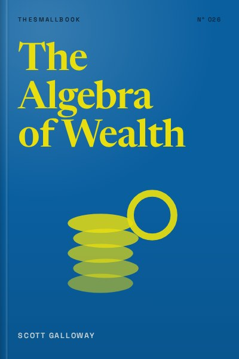

Library › Money & Finance
The Algebra of Wealth - Summary & Key Lessons

Focus plus stoicism plus time plus diversification. A simple formula for financial security.
📖 OPEN THE FULL INTERACTIVE BREAKDOWN →🌐 Read it in Hindi, Hinglish, Gujarati, Tamil & 22 more languages, with audio.
💡 The Big Idea
Scott Galloway, a professor and serial entrepreneur, says economic security is the foundation for everything else: relationships, health, freedom. He reduces wealth building to an equation: Wealth equals Focus plus Stoicism multiplied by Time and Diversification. Focus means building a high income through the right career choices. Stoicism means character: spending less than you earn, avoiding status traps and building good habits. Time means starting early and letting compounding work. Diversification means not betting everything on one stock, job or idea. The book is blunt about luck and unfairness, but insists that most people can improve their odds dramatically by applying the formula consistently.
🧠 The 10 Key Lessons
Lesson 1: Define Wealth Correctly: Passive Income Over Burn
Introduction: The Formula
Galloway defines being wealthy not as owning a big house or a luxury car, but as reaching the point where your passive income, returns from investments and other assets, exceeds your annual spending, which he calls your burn. Until then you depend on your job to survive. This definition shifts focus from showing off to building freedom. It also means that lowering your burn is as powerful as raising your income, because both shorten the distance to independence.
📖 Example: Galloway notes that many high earners, such as doctors and lawyers, are not wealthy by this definition because their spending rises with their income. Meanwhile, a teacher who saves steadily and keeps expenses modest can reach financial independence sooner than someone who earns three times more but spends it all. Read the full example →
⚡ Do this: Calculate your burn: your total yearly spending. Then estimate how much invested money would be needed to cover it (roughly 25 times your annual burn as a starting rule of thumb).
Lesson 2: Focus: Follow Your Talent, Not Your Passion
Part 1: Focus
Galloway criticises the advice to 'follow your passion.' Passion careers such as music, sports or acting have huge supply and few winners. Instead, he advises finding what you are good at and what the market rewards, then getting excellent at it. Passion often comes from mastery, not the other way round. Early in your career, focus on maximising earnings and skill development, because income is the biggest lever for building wealth.
📖 Example: Galloway points to careers such as sales, engineering, finance and specialised trades that pay well and reward skill. He argues that people who become excellent at something useful often grow to love it, because competence brings respect, autonomy and money. Read the full example →
⚡ Do this: List three things you are better at than most people around you. For each, research what the market pays for that skill and which jobs use it.
Lesson 3: Choose Cities, Companies and Bosses Carefully
Part 1: Focus (Career Strategy)
Where you work matters as much as what you do. Galloway advises young people to move to large cities with dense networks and many opportunities, join companies that are growing quickly, and seek bosses who will teach and promote them. Early career choices compound like investments: the right environment exposes you to better people, skills and opportunities. He also stresses hard work in your twenties, when energy is high and responsibilities are low.
📖 Example: Galloway recounts how moving to New York and later San Francisco exposed him to networks and opportunities that would have been impossible in a smaller city. In India, a similar pattern is visible with young professionals moving to Bengaluru, Mumbai or Delhi for career acceleration. Read the full example →
⚡ Do this: Rate your current environment on three factors: growth of your industry, quality of people around you, and quality of your manager. If two of three are weak, start planning a move.
Lesson 4: Stoicism: Character Is the Real Wealth Tool
Part 2: Stoicism
Earning money is only half the equation; keeping it requires discipline. Galloway draws on Stoic philosophy to argue that character, controlling impulses, living below your means and focusing on what you can control, is essential. He warns against lifestyle inflation, status spending and comparing yourself to others on social media. Spending less than you earn, consistently, is the habit that turns income into wealth.
📖 Example: Galloway admits that in his younger years he overspent and made poor financial decisions. Over time, he learned to measure success by savings rate rather than possessions, and found more peace in financial security than in luxury. Read the full example →
⚡ Do this: Track every expense for one week. Identify one recurring purchase driven by status or habit rather than real value, and cut it.
Lesson 5: Build Habits That Make Saving Automatic
Part 2: Stoicism (Habits)
Willpower fails; systems work. Galloway recommends automating savings and investments so money moves before you can spend it. Pay yourself first by setting up automatic transfers to savings and investment accounts on payday. He also advises surrounding yourself with people who share your values, since spending habits are contagious.
📖 Example: Research shows that automatic enrolment in retirement plans dramatically increases participation and savings rates. In India, setting up a systematic investment plan (SIP) in a mutual fund on salary day is a simple way to automate wealth building. Read the full example →
⚡ Do this: Set up an automatic transfer of a fixed percentage of your income into savings or investments on the day you get paid.
Lesson 6: Time: Compounding Is the Eighth Wonder
Part 3: Time
Time is the most powerful ingredient in the formula. Money invested early compounds for decades, growing into far larger sums than money invested later. Galloway explains the rule of 72 (divide 72 by the annual return to estimate how many years money takes to double) and encourages young people to start investing even small amounts immediately. Waiting even five years can cost a huge share of the final result.
📖 Example: At a 12 percent annual return, money doubles roughly every six years. An investment of 1 lakh rupees at age 22 could become about 32 lakh by age 52, while the same amount invested at 32 would grow to only about 10 lakh by 52. Read the full example →
⚡ Do this: Use the rule of 72 to calculate how long your current savings would take to double at a realistic return. Then invest something this month, even if small.
Lesson 7: Respect Inflation and the Cost of Waiting
Part 3: Time (Inflation)
Galloway warns that cash sitting idle loses value to inflation every year. Keeping all savings in a bank account feels safe but slowly erodes purchasing power. He encourages people to understand inflation, invest in assets that historically beat it, such as diversified equity funds, and avoid letting fear keep them out of markets for years.
📖 Example: If inflation averages 6 percent a year, something that costs 100 rupees today will cost about 179 rupees in ten years. Money kept in a savings account earning 3 percent loses real value every year. Read the full example →
⚡ Do this: Check how much of your savings is sitting in cash. Keep an emergency fund, then move the rest into investments that historically outpace inflation.
Lesson 8: Diversification: Do Not Bet the House
Part 4: Diversification
Diversification protects you from the unpredictable. Galloway advises spreading investments across many assets, ideally through low-cost index funds, rather than picking individual stocks or chasing trends. He warns against concentrating wealth in your employer's stock, a single property or speculative assets. Diversification also applies to income: having more than one source of earnings reduces risk.
📖 Example: Galloway cites employees who kept most of their wealth in their company's stock and lost it when the company collapsed, such as at Enron. A diversified index fund, by contrast, survives the failure of any single company. Read the full example →
⚡ Do this: List where your money and income come from. If more than half depends on a single company, asset or person, take one step this month to diversify.
Lesson 9: Avoid Trading and Speculation Traps
Part 4: Diversification (Investing Mistakes)
Galloway is sceptical of frequent trading, cryptocurrency speculation and get-rich-quick schemes. Most active traders underperform the market after fees and taxes. He recommends a boring, disciplined strategy: regular investing in diversified funds, minimal trading and long holding periods. Excitement is a warning sign in investing.
📖 Example: Studies of retail traders consistently show that the majority lose money over time. Galloway warns that apps which make trading feel like a game encourage behaviour that benefits brokers rather than investors. Read the full example →
⚡ Do this: If you trade frequently, compare your returns over the last year with a simple index fund. If the index won, consider shifting most of your money to passive investing.
Lesson 10: Wealth Is a Means to Relationships and Freedom
Conclusion: The Purpose of Wealth
Galloway ends by reminding readers that money is a tool, not the goal. Economic security allows you to invest in relationships, health and experiences. He urges readers to use wealth to support family, mentor others and create time for what matters. The formula is about freedom, the ability to make choices without fear.
📖 Example: Galloway reflects on his own life, noting that his greatest satisfaction comes not from wealth itself but from being able to spend time with his children and support causes he cares about. Read the full example →
⚡ Do this: Write down what financial security would let you do that you cannot do now. Keep that list with your budget as a reminder of why you are saving.
✅ 5-Step Action Plan
- Calculate your yearly burn and your independence number.
- Pick a career path that matches your talent and market demand.
- Automate saving on payday with a SIP or transfer.
- Move idle cash beyond your emergency fund into diversified investments.
- Check whether more than half your wealth depends on one asset, and diversify.
⚠️ When This Doesn't Work
Galloway writes from an American context with US accounts, taxes and housing markets. In India, family obligations, wedding costs and joint households change the maths, and markets have different risks. The formula still applies, but adapt it: use Indian instruments (PPF, EPF, index funds), plan for family responsibilities and remember that a high-paying big-city job also has big-city rent.
💀 The Graveyard Proves It
💬 Best Quotes from The Algebra of Wealth
- “Wealth is not what you spend. It is what you do not spend.”
- “Do not follow your passion. Follow your talent, and passion will follow.”
- “Rich is a number. Wealthy is when your passive income exceeds your burn.”
Interactive version: mark lessons as read, listen in your language, share quote cards.